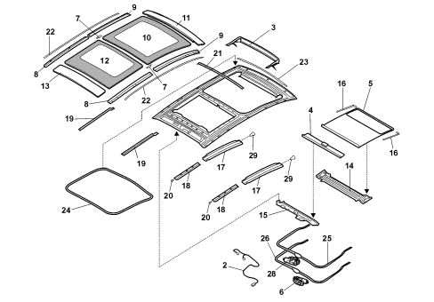
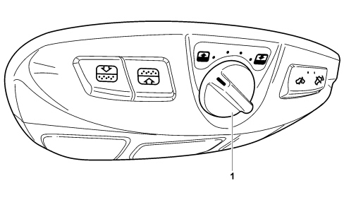
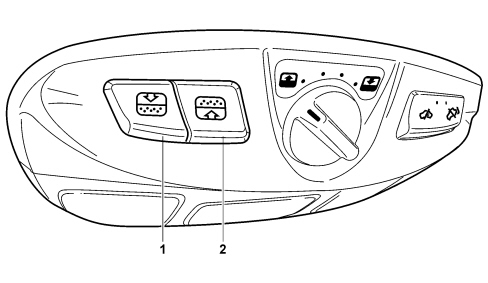
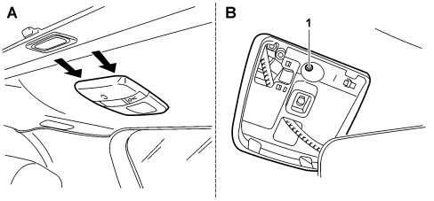

INTRODUCTION - SUN ROOF AND HOOD
- Path
- Descriptions > 70 FITTINGS > 7030 SUN ROOF/GLASS PANEL > INTRODUCTION - SUN ROOF AND HOOD
- Kind
- system description
- Applies to
- all engines; all production periods
- Interactive page
- https://sloeber94.github.io/elrnDB-fCrm/en/#/194001962
Applies to: all engines; all production periods
INTRODUCTION
The CROMA is also available in a version with a sun roof with a special extensively glazed area known as "Skydome outersliding" consisting of two electrically operated glass panels, the rear one fixed and the other moving.
The roof has two sun blinds that slide independently towards the rear of the vehicle.
Whilst driving it is therefore possible, from time to time, to have a different relationship with the surrounding environment. The Fiat CROMA can transform itself from a closed vehicle into a car with a glass roof or a vehicle with a sun roof.
When you want the passenger compartment to be bright, it is possible to have the glazed part closed and the blind underneath open.
If, on the other hand, you prefer driving under the open skies, it takes just seven seconds to completely open the front glass panel and the blind and you can enjoy a real "window to the world".
COMPOSITION
The diagram illustrates the sun roof components.

1 - Frame
2 - Wiring
3 - Deflector
4 - Rear blind
5 - Front blind
6 - Blind motor
7 - Connecting rod
8 - Rear moulding
9 - Front moulding
10 - Front glass
11 - Front roof
12 - Rear glass
13 - Rear roof
14 - Centre crossmember
15 - Rear crossmember
16 - Drive cable
17 - Mechanical guide
18 - Rear blind guide
19 - Side seals
20 - Rear blind support
21 - Centre seal
22 - Side seal
23 - Wind seal
24 - Glass seal
25 - Mechanical pipes
26 - Blind pipes
27 - Inclination pin
28 - Roof motor with C.T.A.
29 - Mechanisms
The sunroof unit is built with an all-in-one structure: the glazed surface extends in direction Y from the right channel to the left. In direction X is extends to cover some 80% of the roof surface. Two non transparent fixed front and rear panels have the function of guaranteeing the aesthetic continuity with the windscreen and the tailgate.
The glazed surface is divided into two panels, the rear one is fixed in heat-proof glass like the front sliding panel activated by a switch that can be adjusted by means of a five position selector.
A sealing strip to protect against infiltration around the edges of the sliding section opening is in contact with the front sliding panel profile.
The sun roof and electric front blind selectors are located on the front courtesy light cover and, by means of a control unit, control the operation of the electric motor, located on the rear of the roof. The movement for both takes place by means of the motor pinion that drives two flexible racks (bowden).
The front and rear blinds used to protect against sunlight are sliding roller blinds. They slide along guides supported by teflon slide pads with rubber bearings between pad and guide.
The front sun blind is electrically operated, the rear one is made from polyester and can only be operated manually. The latter has a handle in the front part for the grip which contains an attachment tooth for when the blind is open.
The electronic control units are incorporated in the electric motor casing. There are two, one for the moving glass (master) and one for the blind (slave).
The main sun roof sub-assemblies are:
- Single SMC frame.
- A system of right and left mechanisms, inserted in the aluminium guides, for moving the front glass panel, operated by the electric motor by means of a metal spiral cable.
- 2 aluminium front guides for the sliding function: for the front pulley, the metal spiral cable and the front blind.
- 2 aluminium rear guides for the sliding function for the pulley and the rear blind.
- Electrically operated polyester front blind controlled by means of a rocker switch. On opening it wraps around the centre part of the roof allow complete visibility towards the outside of the car.
- Manually operated polyester rear blind with a spring roller system which allows 2 positions, open or closed; on opening it wraps around the rear part of the roof allowing complete visibility towards the outside of the vehicle.
- 2 glass panels 5 mm thick with a brightness transmission of TL > 13% and an energy transmission TE < 10%.
- Front and rear roof panel painted in shiny black with serigraphy fitted on the sun roof kit.
- Aluminium deflector with retractable plastic corners to avoid the effects produced by aerodynamic turbulence (buffeting and passenger comfort) in all driving conditions.
- Plastic side moulding
- Motor activating front glass panel with control unit for anti-crush safety function.
- Motor activating front blind with control unit (with annti-crush safety function).
FUNCTIONAL SPECIFICATIONS
The assembly has no water drains so this function is carried out by the rain gutters on the roof.
The positioning of the assembly on the bodyshell is guaranteed by references on the sun roof frame and by drillings in the bodyshell.
The bonding to the bodyshell guarantees the water tightness (before and after fatigue/ageing) and is resistant to a vertical force equal to that produced by a pressure of 6000 N/m² applied to the perimeter of the bonded frame.
Installation from the outside with the sun roof frame bonded to the bodyshell roof panel. When bonding it is possible to lower the assembly vertically (the bonding by means of the partner remains for a force on the glass perimeter of 250 Kg).
Whilst opening, the front glass panel slides horizontally above the rear panel sliding along outer side guides.
The colour of the glass used for the panels is grey and the light transmission is TL > 13% and the energy transmission is TE < 10%.
The overall weight is 45 kg.
SUN ROOF OPERATION
Selector
The sun roof is operated by activating the controls in the front centre courtesy light, namely the 5 position rotary selector (clockwise for opening and anti-clockwise for closing) for the movement of the glass panel and an impulse type opening/closing button for the blind.
When the selector is operated the movement of the roof is only activated when the desired position is maintained for at least 400 ms.
There is a corresponding opening of the sun roof for each of the 5 positions; position 1 corresponds to the least opening of the roof until position 5 is reached which is the complete opening of the roof.
By pressing it vertically the rotary selector immediately stops the movement of the roof (e.g. in emergencies as described later on).
View of 5 position control selector

1 - Selector
Roof opening (at key on)
From the roof completely closed, rotary selector in position "0", the glass panel opening takes place as described below:
- First rotary selector position: translative movement of front panel into tilting position (opening in direction X vehicle 40 mm);
- Second rotary selector position: translative movement of front panel (opening in direction X vehicle 180 mm);
- Third rotary selector position: translative movement of front panel (opening in direction X vehicle 315 mm)
- Fourth rotary selector position: translative movement of front panel (opening in direction X vehicle 453 mm);
- Fifth rotary selector position: translative movement of front panel until it is completely open (opening in direction X vehicle 590 mm);
By placing the selector in one of the positions, the roof moves automatically until it is in the desired position; therefore to open the roof completely in a single manoeuvre, place the selector in the last (fifth) position.
Roof closing (at key on)
The closing of the panel does not affect the position of the blind, for each selector position there is a corresponding closing of the roof with the movement of the moving panel in direct X of the vehicle as described previously.
By placing the selector in one of the positions, the roof moves automatically until it is in the desired position; therefore to close the roof completely in a single manoeuvre, place the selector in position "0".
BLIND OPERATION
Control buttons (one-touch)
View of ONE-TOUCH control buttons

1 - Blind opening button
2 - Blind closing button
Blind opening/closing (at key on)
The opening/closing of the front sun blind takes place after pressing the pulse type button for > 3000ms and the action is interrupted when the button is pressed again.
The blind has a One-Touch function for complete closing/opening. During the opening of the roof, in spite of the front blind being secured to the opening, it is not subject to the position of the front glass panel but is is not advisable to drive with the blind closed nd the glass open.
The rear sun blind is opened and closed by manual operation.
ANTI-CRUSH SAFETY FUNCTION
The (HALL effect) anti-crush safety system is activated on the front profile of the glass panel and is managed by the engine electronic control unit (fitted at the rear).
It is activated for the entire closing range of the panel therefore guaranteeing the reversal of the direction for a travel of 200mm if an obstacle is encountered.
During vertical movements it is activated for openings of h > 14 mm from the level of the rear glass (minimum travel to exclude the contact section for the panel/seal where the maximum load is required to guarantee the water tightness), after meeting an obstacle on the lower rear side of the glass panel. It guarantees the reversal of the direction until the max tilting position is reached.
Following the detection of a force of more than a certain level, corresponding to a greater current absorption and drop in rpm the sun roof control unit (CTA) commands the immediate stopping and reversal of movement.
At the same time, the anti-crush safety system is activated on the front profile of the blind managed by the Slave electronic control unit (fitted at the rear) and, in particular, it is activated for the entire blind closing range. After it meets and obstacle (e.g. finger, hand, etc.) the slave control unit guarantees the reversal in direction equal to a travel of 200mm.
After the activation of the anti-crush safety system, proceed as follows:
- turn the rotary selector into another position, the sun roof will move into desired position;
- press the rotary selector vertically once: the roof will assume the position indicated by the selector.
The sun roof control unit also receives a vehicle speed signal because, depending on the speed, through the change in the force required for closing the roof changes and in certain circumstances this could be perceived as an impediment.
The presence of ice or any foreign bodies in the sun roof guides could involve the repeated intervention of the anti-crush safety function.
It is therefore necessary to make sure that there are no obstacles. In these cases the device can be inhibited by closing the sun roof (within 5 seconds of the intervention of the device), turning the selector to position "0" and keeping it pressed until the roof is closed. The movement during the closing takes place in stages.
The anti-crush safety function can be excluded by using the selector inhibitor position. Following the reversal of the direction caused by the intervention of the anti-crush safety function it can be inhibited by keeping the rotary selector pressed in position "0" within 5 secs; the anti-crush safety function is not activated until the roof reaches the closing position or the selector is released.
CONTROL UNIT INITIALIZATION
If the sun roof and/or blind control units are replaced or after the battery has been disconnected, an intialization/reset procedure has to be carried out.
Roof initialization
For the initialization of the roof, carry out the following procedure:
- insert the key and turn it to the ON position;
- turn the selector fully to the left (anticlockwise, position "0");
- press the selector and keeping it pressed wait until the roof locks mechanically (clearly visible) after which the selector should be released;
- within 5 seconds press the selector againn and keep it pressed: the roof should move completing a cycle automatically; in this stage, continue to keep the selector pressed;
- when the roof stops, release the selector: the initialization is complete.
At this point the selector can be rotated placing the roof in the desired position.
Blind initialization
For the initialization of the blind, carry out the following procedure:
- insert the key and turn it to the ON position;
- press the closing button and keep it pressed for long enough to notice the mechanical stop of the geared motor (clearly visible);
- release the button;
- within 5 seconds press the closing button again and keep it pressed: after the same number of seconds the blind will carry out an automatic cycle; during this stage keep the switch pressed;
- when the blind movement cycle is over, the initialization is completed.
- release the button.
At this point the blind will be in the closed position.
EMERGENCY MANOEUVRE
The roof motor is housed in the rear part of the roof, at the height of the rear courtesy light.

1 - Emergency activating seat
If the electric device for moving the roof fails, the sun roof can be moved manually proceeding as described below:
- take the emergency key from the glove compartment;
- remove the rear courtesy light applying leverage at the points shown by the arrows (figure A);
- introduce the key into the housing (1, figure B) and turn it clockwise to open the roof or anti-clockwise to close it.